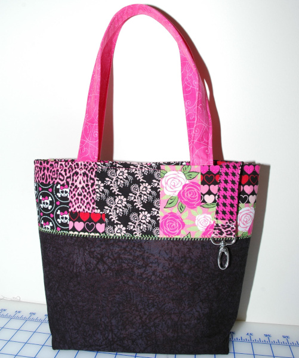

My mother taught me to sew when I was about 9 or 10. First, sewing by hand and then on her 1954 singer sewing machine. She was a seamstress and made clothes for me and my sister when we were kids as well as friends and family.  My first major sewing project was a life-sized cloth doll I made by tracing my body, arms and legs. I believe I still have her in a box in the basement. Other than Kiki (that's what I named her), I made a few Barbie clothes and some stuffed animals, but not much else until I was much older.
My sewing hobby didn’t take off until I was married with two children. I started taking sewing classes at a local sewing store. I made nightgowns for my daughter and a pair of pajamas for my son. I took alteration classes, learning how to modify my own clothes to fit better or make into something new. Eventually, I was confident enough to tackle a tailored jacket which still hangs in my closet today despite it no longer fitting me. It was my most complex sewing project so definitely worth keeping.
I continued to take lessons for over the years, learning a variety of sewing techniques and project types as well as learning how to use a serger (used to create an overlock stitch and cut the fabric at the same time). It’s the machine used to sew sweatshirts and other garments made from knit fabrics. Among my favorite sewing projects was a stuffed, jointed teddy bear and a tote bag.
After taking the tote bag sewing class, making tote bags became a passion for me as I learned how to design my own bags. I loved making them so much that I planned to have my own bag making business until I realized I really only enjoyed making them for family and friends. The idea of having to produce so many bags to make enough income was overwhelming. I knew it would take the fun out of why I enjoyed sewing. It's designing the bag, selecting coordinating fabrics and embellishments, and piecing everything together to bring my vision to life. It's why I prefer to keep sewing as a hobby rather than make it a job.